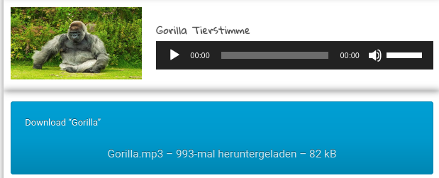

Aufgaben
⚠️ Die folgenden Aufgaben kannst du in einer beliebigen Reihenfolge machen. Spiel einfach ein bisschen rum und mach deine Website zu einem Erlebnis!
Aufgabe 1 - Bild
Füge das Wikipedia- Bild deines Tieres links neben dem ersten Absatz ein.
(siehe Beispiel-Website Punkt 5)
Aufgabe 2 - Ton
-
Gehe auf diese Website und suche nach deinem Tier.
-
Wenn du es nicht findest such dir ein anderes Tier raus (es darf sich auch ganz anders anhören - es ist bestimmt lustig, wenn sich ein Affe anhört wie ein Elefant.
-
Klicke mit Rechtsklick auf den großen blauen Button wo Download drauf steht und dann auf Copy Link. Das ist der Link, den du brauchst um den Ton zu verlinken.

(siehe Beispiel-Website Punkt 13)
Aufgabe 3 - Video
-
Gehe auf YouTube und suche ein lustiges Video zu deinem Tier.
-
Wenn du keins findest, such einfach ein lustiges Katzen oder Hundevideo raus.
⚠️ Bitte sucht keine anderen Videos. Ich werde nur ungern laut.
- Füge dein lustiges Video auf deiner Website ein.
(siehe Beispiel-Website Punkt 15)
Aufgabe 4 - Google Maps
- Suche einen Ort eines Zoos in Europa mit Google Maps heraus. (Der Zoo muss nicht dein Tier beherbergen) Verlinke den Ort des Zoos auf deiner Website so wie du es gelernt hast.
(siehe Beispiel-Website Punkt 14)
Aufgabe 5 - Kontaktdaten
-
Denke dir Kontaktdaten aus! (Nehme nicht deine eigenen und auch nicht die eines Freundes oder einer Person aus dem Internet!)
Eine kreative Emailadresse ist immer gut für einen Witz!
-
Füge den Kontakt einer Person wie zuvor gelernt auf der Website ein. Sowohl als Email als auch als Telefon-Kontakt.
(siehe Beispiel-Website Punkt 16 und 17)
Aufgabe 6 - Navigation
Füge ein Inhaltsverzeichnis ein, dass die folgenden Einträge hat:
-
"Mein Tier"
-
Lebensweise
-
Fressen
Außerdem soll es einen Link am Ende der Website geben, mit dem man wieder zum Anfang der Website kommt.
⚠️ Diese Aufgabe ist für die echten Profis!
- Add Ons
Unterstreiche und streiche Text durch, indem du den ins und del Befehl probierst. Wofür könnten die Befehle stehen? Googel gegebenenfalls.
⚠️ Deine Website kann jetzt ungefähr so aussehen
⚠️ Wenn du schnell warst guck doch einfach mal in den nächsten Abschnitt CSS rein. Dort lernst du wie du Farbe in deine Website bekommst und sie generell schöner machst.